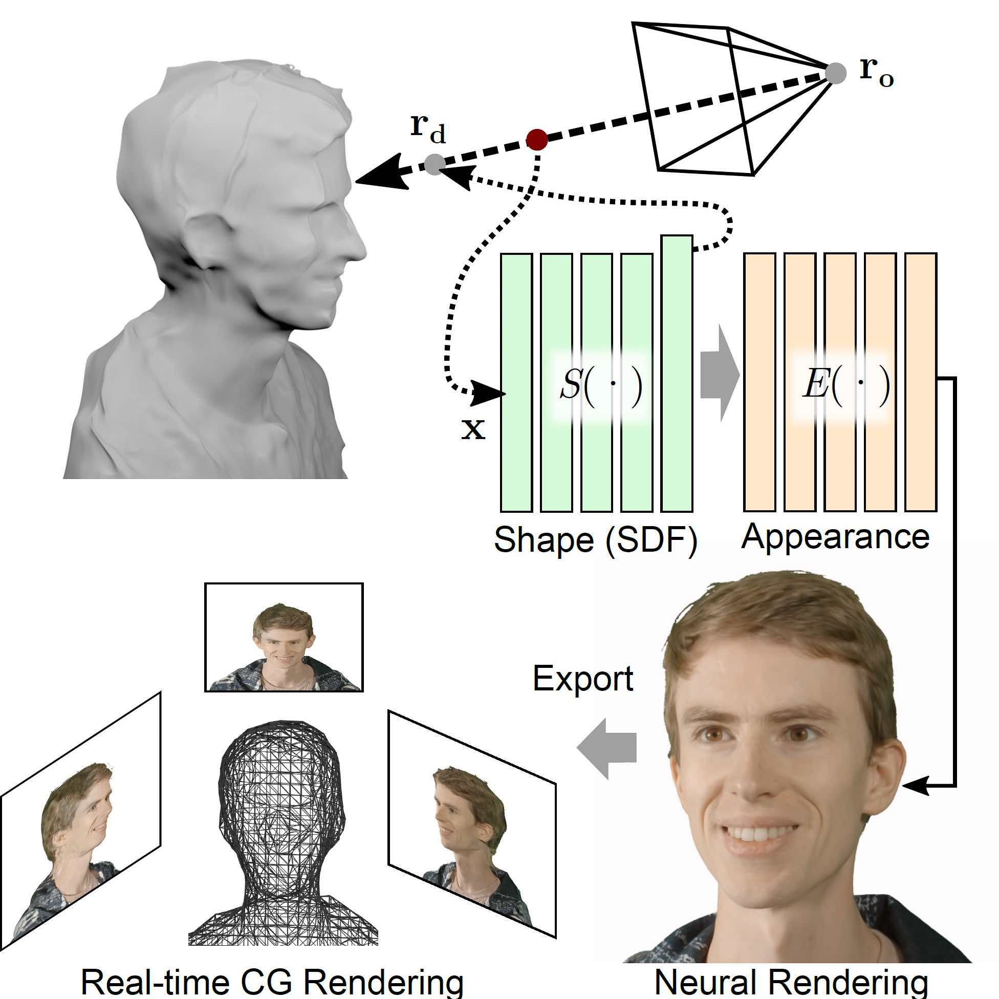

-

Neural Lumigraph Rendering
P. Kellnhofer, L. Jebe, A. Jones, R. Spicer, K. Pulli, G. Wetzstein CVPR 2021 (best paper candidate)
project page | arXiv | dataset
-

Augmented Reality in the Operating Room
Registering surgical microscope images with a CT scan. In collaboration with Bernd Girod and Nikolas Blevins
-
CS 148 Raytracing
Introduction to Computer Graphics Stanford University
-
Online Phase Current and Voltage Offset Calibration using Inverter Voltage Distortion
M. Schubert, L. Jebe, M. Gossen, R. W. De Doncker
IEEE PEDS 2017 -
Gate Driver Integrated Instantaneous Phase Voltage Measurement in PWM Voltage Source Inverters
M. Schubert, L. Jebe, R. W. De Doncker IEEE INTELEC 2016